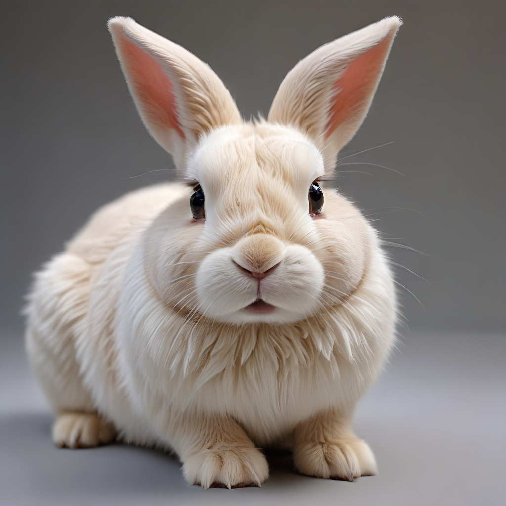

คู่มือการใช้ฟีเจอร์ Super Resolution
ฟีเจอร์ Super Resolution ใน AiCasso เป็นเรื่องเกี่ยวกับการทำให้ภาพของคุณดูดีขึ้น คุณเพียงแค่บอกว่าคุณต้องการปรับปรุงภาพของคุณอย่างไร และ AiCasso จะดูแลส่วนที่เหลือ ไม่ว่าคุณจะต้องการทำให้รายละเอียดชัดเจนขึ้นหรือเพิ่มความคมชัดให้กับภาพทั้งหมด มันใช้งานง่ายมาก
วิธีการทำงาน:
ภาพนำเข้า:
คำสั่ง:
"ขยายภาพ 4 เท่า ใช้โมเดล Ultra Sharp"
ผลลัพธ์:

พารามิเตอร์เพิ่มเติม
หากคุณต้องการควบคุมเพิ่มเติมเกี่ยวกับวิธีการปรับปรุงภาพของคุณ นี่คือทางเลือกเพิ่มเติมที่คุณสามารถเล่นได้:
- ขนาด: นี่คือขนาดที่คุณต้องการขยายภาพของคุณ คุณสามารถเลือกขนาดจาก 1 ถึง 4 โดยที่ 4 เป็นค่าเริ่มต้น โดยทั่วไปแล้ว ตัวเลขที่ใหญ่กว่าจะหมายถึงภาพที่ใหญ่ขึ้น
- โมเดลการขยาย: นี่เหมือนกับการเลือกฟิลเตอร์สำหรับภาพของคุณ แต่ฉลาดกว่ามาก นี่คือทางเลือก:
- การเพิ่มรายละเอียดใหญ่: ดีที่สุดสำหรับการซูมเข้าไปที่รายละเอียดเล็กๆ
- Ultra Sharp: ทำให้ภาพชัดเจนและคมชัดมาก
- Anime Enhance: เหมาะสำหรับภาพสไตล์อนิเมะ ทำให้ดูคมชัดและมีชีวิตชีวา
- Double Detail: เพิ่มรายละเอียดเป็นสองเท่าโดยไม่ทำให้เกินไป
- General Boost: ตัวเลือกที่ดีสำหรับภาพส่วนใหญ่
- การปรับปรุงใบหน้า: หากภาพของคุณมีใบหน้า ตัวเลือกนี้สามารถช่วยทำให้ดูดีขึ้น เพียงแค่เปิดใช้งานหากคุณต้องการให้ AiCasso มุ่งเน้นไปที่การปรับปรุงลักษณะใบหน้า
จำไว้ว่าตัวเลือกเหล่านี้เป็นตัวเลือกเสริม! คุณไม่จำเป็นต้องยุ่งเกี่ยวกับพวกเขาหากคุณไม่ต้องการ เพียงแค่บอกสิ่งที่คุณต้องการ และ AiCasso จะหาวิธีที่ดีที่สุดในการทำให้มันเกิดขึ้น และไม่ต้องกังวลเกี่ยวกับการใช้คำให้ถูกต้อง—AiCasso เข้าใจคุณ!